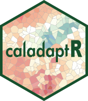

Create a six-dimensional stars object for modeled climate data
Source:R/ca_stars_6d.R
ca_stars_6d.RdCreate a six-dimensional stars object for modeled climate data
Details
stars_lst is a list of stars objects downloaded by ca_getrst_stars and turned into a list by
ca_stars_read. Note that both of these functions must use `sidecar = TRUE`.
Creating a six-dimensional stars array of projected climate data may be useful for writing more compact expressions for analysis. Six-dimensional arrays can only be constructed if the API request specifed the GCM, scenario, and climate variable. Rasters retrieved using an API request that specified the dataset by the name of the slug can not be turned into a 6D arrays. Another requirement is that all the rasters have the same location / extent.